전기기사 (2010-07-25 기출문제)
1과목: 전기자기학
1. 길이 1m, 단면적 15[cm2]인 무단 솔레노이드에 0.01[Wb]의 자속을 통하는데 필요한 기자력은? (단, 철심의 비투자율을 1000이라 한다.)
- 103/(6π)[AT]
- 107/(6π)[AT]
- 106/(6π)[AT]
- 105/(6π)[AT]
(정답률: 56%)

2. 정현파 자속의 주파수를 2배로 높이면 유기 기전력은?
- 변하지 않는다.
- 2배로 증가한다.
- 4배로 증가한다.
- 1/2이 된다.
(정답률: 76%)
3. 내도체의 반지름이 1/(4πε)[㎝], 외도체의 반지름이 1/(πε)[㎝]인 동심구 사이를 유전율이 ε[F/m]인 매질로 채웠을 때 도체 사이의 정전 용량은?
- 1/2[F]
- 10-2[F]
- 3/4[F]
- (4/3)×10-2[F]
(정답률: 62%)
4. 반지름 a[m]인 2개의 원형 선조 루프가 ±Z축 상에 그림과 같이 놓여진 경우 I[A]의 전류가 흐를 때, 원형 전류 중심축상의 자계 Hz [A/m]는? (단, az, aø는 단위벡터이다.)
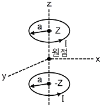
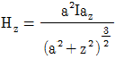
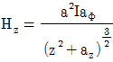
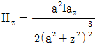
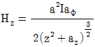
(정답률: 45%)
5. 지구 중심방향으로 향하는 300[V/m]의 전계가 지표면에 있다면 그 표면의 전하 밀도는? (단, 지구는 도체로 본다.)
- 2.66×10-9[c/m2]
- -2.66×10-9[c/m2]
- 1.33×10-9[c/m2]
- -1.33×10-9[c/m2]
(정답률: 56%)
6. 서로 같은 두개의 구 도체에 동일양의 전하를 대전 시킨 후 20[㎝] 떨어뜨린 결과 구 도체에 서로 6×10-4[N]의 반발력이 작용한다. 구 도체에 주어진 전하는?
- 약 5.2×10-8[C]
- 약 6.2×10-8[C]
- 약 7.2×10-8[C]
- 약 8.2×10-8[C]
(정답률: 52%)
7. 자유 공간을 진행하는 전자기파의 전계와 자계의 위상차는?
- 전계가 π/2빠르다.
- 자계가 π/2빠르다.
- 위상이 같다.
- 전계가 π빠르다.
(정답률: 72%)
8. 자성체 내에서 임의의 방향으로 배열되었던 자구가 외부 자장의 힘이 일정치 이상이 되면 순간적으로 회전하여 자장의 방향으로 배열되기 때문에 자속 밀도가 증가하는 현상은?
- 자기여효(magnetic aftereffect)
- 바크하우젠(Bark hausen) 효과
- 자기왜현상(magneto-striction effect)
- 핀치효과(Pinch effect)
(정답률: 71%)
9. 순수한 물 (ℇs=80, μs=1)중에 있어서의 고유 임피던스는?
- 약 38.2[Ω]
- 약 42.2[Ω]
- 약 46.2[Ω]
- 약 50.2[Ω]
(정답률: 77%)
10. 평균길이 1[m], 권수 1000회의 솔레노이드 코일에 비투자율 1000의 철심을 넣고 자속밀도 1[Wb/m2]를 얻기 위해 코일에 흘려야 할 전류는?
- 0.4[A]
- 0.6[A]
- 0.8[A]
- 1.0[A]
(정답률: 58%)
11. z방향으로 진행하는 평면파에 대한 설명으로 잘못된 것은?
- z성분이 0이다.
- x의 미분 계수가 0이다.
- y의 미분 계수가 0이다.
- z의 미분 계수가 0이다.
(정답률: 67%)
12. 길이 8m의 도선으로 정사각형을 만들고 직류 π[A]를 흘렸을 때, 그 중심에서의 자계의 세기는?
- √2/2[A/m]
- √2[A/m]
- 2√2[A/m]
- 4√2[A/m]
(정답률: 60%)
13. 진공 중에 선간거리 1[m]의 평행왕복 도선이 있다. 두 선간에 작용하는 힘이 4×10-7[N/m]이었다면 전선에 흐르는 전류는?(오류 신고가 접수된 문제입니다. 반드시 정답과 해설을 확인하시기 바랍니다.)
- 1[A]
- √2[A]
- √3[A]
- 2[A]
(정답률: 62%)
14. 자기회로에 대한 설명으로 틀린 것은?
- 전기회로의 정전용량에 해당되는 것은 없다.
- 자기 저항에는 전기저항의 줄손실에 해당되는 손실이 있다
- 기자력과 자속은 변화가 비직선성을 갖고 있다.
- 누설자속은 전기회로의 누설전류에 비하여 대체로 많다.
(정답률: 63%)
15. 최대 정전용량 C0[F]인 그림과 같은 콘덴서의 정전용량이 각도에 비례하여 변화한다고 한다. 이 콘덴서를 전압 V[V]로 충전했을 때, 회전자에 작용하는 토크는?
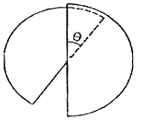
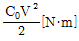
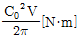
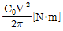
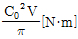
(정답률: 70%)
16. 두 유전체의 경계면에서 정전계가 만족하는 것은?
- 전속은 유전율이 작은 유전체로 모인다.
- 두 경계면에서의 전위는 서로 같다.
- 전속밀도는 접선성분이 서로 같다.
- 전계는 법선성분이 같다.
(정답률: 63%)
17. 다음 설명 중 잘못된 것은?
- 저항률의 역수는 전도율이다.
- 도체의 저항률은 온도가 올라가면 그 값이 증가한다.
- 저항의 역수는 컨덕턴스이고, 그 단위는 지멘스[S]를 사용한다.
- 도체의 저항은 단면적에 비례한다.
(정답률: 74%)
18. 다음 중 비투자율이 가장 큰 것은?
- 금
- 은
- 구리
- 니켈
(정답률: 67%)
19. 극판의 면적이 4[cm2], 정전 용량이 10pF 인 종이 콘덴서를 만들려고 한다. 비유전율 2.5, 두께 0.01mm의 종이를 사용하면 약 몇 장을 겹쳐야 되겠는가?
- 89장
- 100장
- 885장
- 8850장
(정답률: 60%)
20. 저항 20[Ω]인 동선과 저항 90[Ω]인 망간선을 직렬로 접속한 경우 회로의 합성 온도 계수는? (단, 동선의 온도계수 α1=0.00427이고, 망간선의 온도계수 α2≒0이다.)
- 약 5×10-4[1/℃]
- 약 6×10-4[1/℃]
- 약 8×10-4[1/℃]
- 약 9×10-4[1/℃]
(정답률: 58%)
2과목: 전력공학
21. 송전선로에서 역섬락을 방지하는데 가장 유효한 방법은?
- 가공지선을 설치한다.
- 소호각을 설치한다.
- 탑각 접지저항을 작게 한다.
- 피뢰기를 설치한다.
(정답률: 72%)
22. 전력계통에서 인터록(inter lock)의 설명으로 알맞은 것은?
- 부하통전 시 단로기를 열 수 있다.
- 차단기가 열려 있어야 단로기를 닫을 수 있다.
- 차단기가 닫혀 있어야 단로기를 열 수 있다.
- 차단기의 접점과 단로기의 접점이 기계적으로 연결되어 있다.
(정답률: 79%)
23. 다음 중 보호 계전 방식이 그 역할을 다하기 위하여 요구 되어지는 구비 조건과 거리가 먼 것은?
- 고장 회선 내지 고장 구간의 차단을 신속 정확하게 할 수 있을 것
- 과도 안정도를 유지하는데 필요한 한도 내의 작동 시한을 가질 것
- 적절한 후비 보호 능력이 있을 것
- 고장 파급 범위를 최대로 하기 위한 재폐로를 실시할 것
(정답률: 74%)
24. 정격 전압 154[kV], 1선의 유도 리액턴스가 20[Ω]인 3상 3선식 송전선로에서 154[kV], 100[MVA]기준으로 환산한 이 선로의 % 리액턴스는?
- 약 1.4[%]
- 약 2.2[%]
- 약 4.2[%]
- 약 8.4[%]
(정답률: 67%)
25. 다음 송전선로의 전기 방식 중 전선의 중량(전선비용)이 가장 적게 소요되는 방식은? (단, 송전전압, 송전거리, 송전전력 및 선로 손실은 같다.)
- 단상 2선식
- 단상 3선식
- 3상 3선식
- 3상 4선식
(정답률: 67%)
26. 전력 퓨즈에 대한 설명 중 틀린 것은?
- 차단용량이 크다.
- 보수가 간단하다.
- 정전 용량이 크다.
- 가격이 저렴하다.
(정답률: 69%)
27. 화력발전소에서 열사이클의 효율 향상을 기하기 위한 방법이 아닌 것은?
- 고압, 고온증기의 채용과 과열기의 설치
- 절탄기, 공기예열기의 설치
- 재생, 재열사이클의 채용
- 조속기의 설치
(정답률: 74%)
28. 전력계통에서 전력용 콘덴서와 직렬로 연결하는 리액터로 제거되는 고조파는?
- 제2고조파
- 제3고조파
- 제4고조파
- 제5고조파
(정답률: 75%)
29. 원자력 발전소에서 원자로의 냉각재가 갖추어야 할 조건으로 잘못된 것은?
- 중성자의 흡수 단면적이 클 것
- 유도 방사능이 적을 것
- 비열이 클 것
- 열전도율이 클 것
(정답률: 62%)
30. 저압 뱅킹배전방식에서 캐스케이딩 현상이란?
- 변압기의 부하 배분이 불균일한 현상
- 저압선의 고장에 의하여 건전한 변압기의 일부 또는 전부가 차단되는 현상
- 전압 동요가 적은 현상
- 저압선이나 변압기에 고장이 생기면 자동적으로 고장이 제거되는 현상
(정답률: 79%)
31. 전력계통의 주회로에 사용되는 것으로 고장 전류와 같은 대전류를 차단할 수 있는 것은?
- 선로 개폐기(LS)
- 단로기(DS)
- 차단기(CB)
- 유입개폐기(OS)
(정답률: 76%)
32. 최근 송전 계통에 단권변압기가 사용되고 있다. 그 특성과 관계가 없는 것은?
- 누설 임피던스가 커 단락 전류가 작다.
- 1차측 이상전압이 2차측에 영향을 미친다.
- 충량이 가볍다.
- 전압 변동률이 작다.
(정답률: 57%)
33. 저압 배전선의 배전 방식 중 배전 설비가 단순하고, 공급 능력이 최대인 경제적 배분 방식이며, 국내에서 220/380[V] 승압 방식으로 채택된 방식은?
- 단상 2선식
- 단상 3선식
- 3상 4선식
- 3상 3선식
(정답률: 71%)
34. 154[kV], 60[Hz], 길이 50[km]인 3상 송전선로에서 Cs=0.004[μF/㎞], Cm=0.0012[μF/㎞]일 때, 1선에 흐르는 충전전류 [A]는?
- 약 0.25
- 약 8.71
- 약 9.66
- 약 12.73
(정답률: 59%)
35. 수압관 안의 한 점에서 흐르는 물의 압력을 측정한 결과 9[㎏/cm2]이고, 유속을 측정한 결과 49[m/s]이었다. 그 점에서의 압력 수두는?
- 30[m]
- 50[m]
- 70[m]
- 90[m]
(정답률: 40%)
36. 그림과 같은 배전선이 있다. 급전점 O의 전압을 110V라 하면 C점의 전압은? (단, OA, AB, BC간의 저항은 각각 0.2[Ω]이며, 부하 역률은 100%이다.)
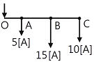
- 92[V]
- 97[V]
- 99[V]
- 104[V]
(정답률: 53%)
37. 유효접지 계통에서 피뢰기의 정격전압을 결정하는데 가장 중요한 요소는?
- 선로 애자련의 충격 섬락 전압
- 내부 이상전압 중 과도이상전압의 크기
- 유도뢰의 전압의 크기
- 1선 지락 고장 시 건전상의 대지 전위 즉, 지속성 이상전압
(정답률: 63%)
38. 직류 송전방식에 대한 설명으로 틀린 것은?
- 직류 방식은 선로 전압이 교류 전압의 최곳값보다 낮아 절연 계급이 낮아진다.
- 직류 방식은 교류 방식의 표피효과가 없어 송전 효율은 떨어진다.
- 직류 방식은 리액턴스나 위상각을 고려할 필요가 없어서 안정도가 좋다.
- 장거리 송전의 경우에는 교류방식보다 직류 방식이 유리하다.
(정답률: 62%)
39. 변압기의 내부 고장 보호용으로 사용되는 계전기는?
- 비율차동 계전기
- 방향 계전기
- 과전압 계전기
- 거리 계전기
(정답률: 80%)
40. 다음 중 송전선의 코로나손과 가장 관계가 깊은 것은?
- 상대공기 밀도
- 송전선의 정전용량
- 송전거리
- 송전선의 전압 변동률
(정답률: 61%)
3과목: 전기기기
41. 병렬 운전을 하고 있는 동기 발전기에서 난조를 일으키는 원인이 아닌 것은?
- 부하가 갑자기 크게 변하는 경우
- 원동기의 토크에 고조파 토크를 포함하는 경우
- 원동기의 조속기 감도가 지나치게 민감한 경우
- 전기자 회로의 저항이 상당히 작은 값인 경우
(정답률: 66%)
42. 3상 직권 정류자 전동기에서 중간 변압기를 사용하는 주된 이유가 아닌 것은?
- 고정자 권선과 병렬로 접속해서 사용하며 동기속도 이상에서 역률을 100[%]로 할 수 있다.
- 전원전압의 크기에 관계없이 회전자 전압을 정류작용에 알맞은 값으로 선정할 수 있다.
- 중간 변압기의 권수비를 바꾸어 전동기 특성을 조정할 수 있다.
- 중간 변압기의 철심을 포화하면 경부하시 속도 상승을 억제할 수 있다.
(정답률: 55%)
43. 변압기의 임피던스 전압은?
- 정격 전류가 흐를 때 2차측 전압
- 정격 전류가 흐를 때 변압기 내의 전압강하
- 여자 전류가 흐를 때의 2차측 전압
- 여자 전류가 흐를 때의 1차측 전압
(정답률: 71%)
44. 20[HP],4극, 60[Hz]의 3상 유도전동기가 있다. 전부하 슬립이 4[%]일 때 전부하시의 토크는?(단, 1[HP]=746[W]이다)
- 약 11.41[㎏·m]
- 약 10.41[㎏·m]
- 약 9.41[㎏·m]
- 약 8.41[㎏·m]
(정답률: 60%)
45. 1[MVA], 3300[V], 동기 임피던스 6[Ω] 2대의 3상 교류발전기를 병렬운전 중 한 발전기의 계자를 강화해서 두 유도기전력(상전압) 사이에 210[V]의 전압차가 생기게 했을 때 두 발전기 사이에 흐르는 무효횡류[A]는?
- 17.5
- 20
- 15.5
- 14
(정답률: 48%)
46. 변압기 내부의 백분율 저항강하와 백분율 리액턴스강하는 각각 3%, 4%이다. 부하의 역률이 지상 60%일 때 변압기의 전압변동율은?
- 2.8%
- 4%
- 5%
- 7.4%
(정답률: 72%)
47. 두 개의 동기 발전기가 병렬운전하고 있다. 그림과 같이 동기 검정기가 접속되었을 때, 상회전 방향이 일치되어 있다면?
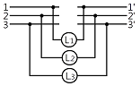
- L1, L2, L3 모두 어둡다.
- L1, L2, L3 모두 밝다.
- L1, L2, L3 순서대로 점멸한다.
- L1, L2, L3 모두 점등되지 않는다.
(정답률: 58%)
48. 권선형 유도 전동기 저항 제어법의 단점 중 틀린 것은?
- 운전 효율이 낮다.
- 부하에 대한 속도 변동률이 작다.
- 제어용 저항기는 가격이 비싸다.
- 부하가 적을 때는 광범위한 속도 조정이 곤란하다.
(정답률: 48%)
49. 직류기의 권선을 단중 파권으로 감으면?
- 내부 병렬회로수가 극수만큼 생긴다.
- 균압환을 연결해야 한다.
- 저압 대전류용 권선이다.
- 전기자 병렬 회로수가 극수에 관계없이 언제나 2이다.
(정답률: 72%)
50. 10[HP], 4극, 60[hz] 3상 유도전동기의 전전압 기동 토크가 전부하 토크의 1/3일 때, 탭 전압이 1/√3인 기동 보상기로 기동하면 그 기동 토크는 저부하 토크의 몇 배가 되겠는가?
- √3
- 1/3
- 1/9
- 2
(정답률: 52%)
51. 단상 전파 정류회로에서 저항 부하시 맥동률은 약 얼마인가?
- 17[%]
- 48[%]
- 52[%]
- 83[%]
(정답률: 59%)
52. 분권 직류전동기에서 부하의 변동이 심할 때, 광범위하고 안정되게 속도를 제어하는 가장 적당한 방식은?
- 계자제어 방식
- 저항제어 방식
- 워드 레오너드 방식
- 일그너 방식
(정답률: 50%)
53. 극수가 24일 때, 전기각 180º에 해당되는 기계각은?
- 7.5º
- 15º
- 22.5º
- 30º
(정답률: 69%)
54. 단상 유도전동기에서 2전 동기설(two motor theory)에 관한 설명 중 틀린 것은?
- 시계방향 회전자계와 반시계방향 회전자계가 두개 있다.
- 1차 권선에는 교번자계가 발생한다.
- 2차 권선 중에는 sf1과 (2-s)f1 주파수가 존재한다.
- 기동 시 토크는 정격토크의 1/2이 된다.
(정답률: 40%)
55. 200[V], 60[Hz], 4극, 20[kW]의 3상 유도전동기가 있다. 전부하일 때의 회전수가 1728[rpm]이면 2차 효율[%]은?
- 45
- 56
- 96
- 100
(정답률: 68%)
56. 유입 변압기에 기름을 사용하는 목적이 아닌 것은?
- 효율을 좋게 하기 위하여
- 절연을 좋게 하기 위하여
- 냉각을 좋게 하기 위하여
- 열방산을 좋게 하기 위하여
(정답률: 56%)
57. 동기발전기에서 무부하 정격 전압일 때의 여자전류를 If0, 정격부하 정격전압일 때의 여자전류를 If1, 3상 단락 정격 전류에 대한 여자 전류를 Ifs라 하면 정격 속도에서의 단락비는?
- Ifs/If0
- If0/Ifs
- Ifs/If1
- If1/Ifs
(정답률: 50%)
58. 그림과 같은 환류다이오드를 사용하여 전파정류 할 때 출력 전압의 평균값은? (단, α는 점호각이다.)
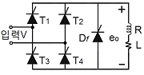
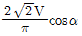
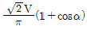
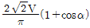
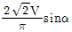
(정답률: 37%)
59. 60[Hz]의 변압기에 50[Hz]의 동일 전압을 가했을 때의 자속밀도는 60[Hz]일 때의 몇 배인가?
- 6/5
- 5/6
- (5/6)1.6
- (5/6)2
(정답률: 58%)
60. 외분권 차동 복권발전기의 단자전압 V는? (øs : 직권 계자 권선에 의한 자속, øf : 분권 계자의 자속, Ra : 전기자의 저항, Rs : 직권 계자저항, Ia : 전기자의 전류, I[A] :부하전류, n[rps] : 속도, k=PZ/a이며, 자기회로의 포화현상과 전기자 반작용은 무시한다.)
- V=K(øf＋øs)n-IaRa-IRs[V]
- V=K(øf-øs)n-IaRa-IRs[V]
- V=K(øf＋øs)n-Ia(Ra＋Rs)[V]
- V=K(øf-øs)n-Ia(Ra＋Rs)[V]
(정답률: 41%)
4과목: 회로이론 및 제어공학
61. 다음 회로를 신호흐름선도로 나타낸 것은?
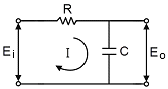
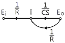
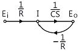
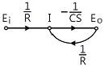
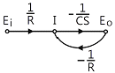
(정답률: 64%)
62. 특성 방정식 Ks3＋s2-2s＋5=0인 제어계의 안정상태는?
- K ＞ 0이면 불안정하다.
- K ＜ -2/5이면 안정하다.
- K ＞ 2/5이면 안정하다.
- K의 값에 관계없이 불안정하다.
(정답률: 58%)
63. 제어계 중에서 물체의 위치(속도, 가속도), 각도(자세, 방향)등의 기계적인 출력을 목적으로 하는 제어는?
- 프로세스 제어
- 프로그램 제어
- 자동 조정제어
- 서보제어
(정답률: 68%)
64. 그림과 같은 제어계에서 단위 계단 입력 D가 인가될 때 외란 D에 의한 정상편차는?
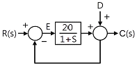
- 20
- 21
- 1/10
- 1/21
(정답률: 61%)
65. Laplace 변환된 함수 X(s)=1/(s(s＋1))에 대한 z변환은?
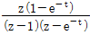
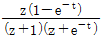
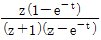
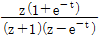
(정답률: 59%)
66. 시스템의 특성이 G(s)=C(s)/U(s)=1/s2과 같을 때 천이행렬은?
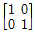
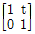
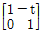
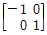
(정답률: 56%)
67. 논리식 L=
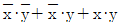
를 간략화한 것은?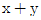
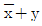
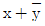
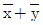
(정답률: 72%)
68. 나이퀴스트(Nyquist)의 안정론에서는 벡터 궤적과 점(X, Y)의 상대적 관계로 안정판별이 결정되는데 이때, X, Y의 값으로 옳은 것은?
- 1,j0
- -1,j0
- 0,j0
- ∞,j0
(정답률: 64%)
69. 개루프 전달함수 G(s)H(s)=(K(S＋1))/(S(S＋2))일 경우, 실수축상의 근 궤적의 범위는?
- 원점과 (-2)사이
- 원점에서 점 (-1) 사이와 (-2)에서 (-∞)사이
- (-2)와 (＋∞)사이
- 원점에서 (＋2)사이
(정답률: 69%)
70. 다음 중 t=0에서 상태 천이행렬 ø(t)=eat의 값은?
- e
- e-1
- I
- 0
(정답률: 55%)
71. 다음 그림과 같이 2개의 전력계에 의한 3상 전력 측정 시전 3상 전력 [W]는?
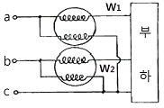
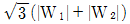
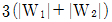
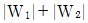
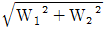
(정답률: 53%)
72. 내부에 기전력이 있는 회로가 있다. 이 회로의 한 쌍의 단자 전압을 측정하였을 때 70[V]이고, 또 이 단자에서 본 이 회로의 임피던스가 60[Ω]이라 한다. 지금 이 단자에 40[Ω]의 저항을 접속하면 이 저항에 흐르는 전류는?
- 0.5[A]
- 0.6[A]
- 0.7[A]
- 0.8[A]
(정답률: 67%)
73. 각상의 임피던스가 6＋j8[Ω]인 평형 Y부하에 선간전압 220[V]인 대칭 3상 전압을 가하였을 때 선전류는?
- 10.7[A]
- 11.7[A]
- 12.7[A]
- 13.7[A]
(정답률: 69%)
74. 어떤 정현파 전압의 평균값이 150[V]이면 최대값은 약 얼마인가?
- 300[V]
- 236[V]
- 115[V]
- 175[V]
(정답률: 60%)
75. f(t)=sint＋2cost를 라플라스 변환하면?
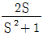
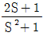
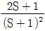
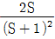
(정답률: 57%)
76. 어떤 회로망의 4단자 정수 중에서 A=8, B=j2, D=3＋j2 이면, 이 회로망의 C 는?
- 24＋j14
- 3-j4
- 8-j11.5
- 4＋j6
(정답률: 67%)
77. 어떤 회로에 100＋j20[V]인 전압을 가했을 때, 8＋j6[A]인 전류가 흘렀다면 이 회로의 소비전력[W]은?
- 800
- 920
- 1200
- 1400
(정답률: 55%)
78. 1상의 임피던스 Z=4＋j3[Ω]인 평형 Y 부하에 평형 3상 전압 208[V]가 인가되었다면 소비전력[W]은?
- 약 4500
- 약 5300
- 약 5180
- 약 6910
(정답률: 52%)
79. 다음과 같은 회로가 정저항 회로가 되기 위한 R값은? (단, L=4[mH], C=0.1[μF]이다.)
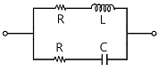
- 40000[Ω]
- 200[Ω]
- 2.5×10-4[Ω]
- 2×10-5[Ω]
(정답률: 61%)
80. 다음의 회로에서 저항 20[Ω]에 흐르는 전류는?
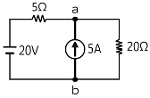
- 0.4[A]
- 1.8[A]
- 3.6[A]
- 5.4[A]
(정답률: 60%)
5과목: 전기설비기술기준 및 판단기준
81. 지중 전선로 시설 규정 중 옳은 것은?(관련 규정 개정전 문제로 여기서는 기존 정답인 4번을 누르면 정답 처리됩니다. 자세한 내용은 해설을 참고하세요.)
- 지중 전선로는 전선으로 케이블을 사용할 수 없다.
- 지중 전선로는 암거식에 의해 시설할 수 없다.
- 지중 전선로를 직접 매설하는 경우에는 차량에 의해 압력을 받을 우려가 있는 장소에서는 60㎝ 이상 매설한다.
- 방호장치의 금속제 부분, 지중전선의 피복으로 사용하는 금속체는 제 3종 접지 공사를 하여야 한다.
(정답률: 62%)
82. 저압 옥측전선로를 시설하는 경우 옳지 않은 공사는? (단, 전개된 장소로서 목조 이외의 조영물에 시설하는 경우)
- 애자사용 공사
- 합성 수지관 공사
- 케이블 공사
- 금속 몰드 공사
(정답률: 46%)
83. 유도장해의 방지를 위한 규정으로 사용전압 60[kV] 이하인 가공 전선로의 유도 전류는 전화선로의 길이 12[km] 마다 몇 [μA]를 넘지 않도록 하여야 하는가?
- 1μA
- 2μA
- 3μA
- 4μA
(정답률: 71%)
84. 저압 가공전선과 고압 가공전선을 동일 지지물에 시설하는 경우 저압 가공전선과 고압 가공전선 이격거리는 몇 [㎝] 이상이어야 하는가?
- 10
- 20
- 40
- 50
(정답률: 55%)
85. 사용 전압이 400[V]미만인 저압 가공 전선으로 절연전선을 사용하는 경우, 지름 몇 [mm] 이상의 경동선을 사용하여야 하는가?(오류 신고가 접수된 문제입니다. 반드시 정답과 해설을 확인하시기 바랍니다.)
- 2.0
- 2.6
- 3.2
- 3.8
(정답률: 65%)
86. 전로에 시설하는 기계기구 중에서 외함 접지공사를 생략할 수 없는 경우는?
- 사용전압이 직류 300[V] 또는 교류 대지 전압이 150[V] 이하인 기계기구를 건조한 장소에 시설하는 경우
- 정격 감도 전류 40[mA], 동작시간이 0.5초인 전류 동작형의 인체 감전 보호용 누전 차단기를 시설하는 경우
- 외함이 없는 계기용변성기가 고무, 합성수지 기타의 절연물로 피복한 것일 경우
- 철대 또는 외함의 주위에 적당한 절연대를 설치하는 경우
(정답률: 58%)
87. 강색 차선과 대지 사이의 절연 저항은 사용전압에 대한 누설전류가 궤도의 연장 1[km]마다 몇 [mA]를 넘지 않도록 하여야 하는가?
- 5
- 10
- 30
- 50
(정답률: 55%)
88. 제1종 접지공사의 접지선의 굵기는 공칭단면적 몇 [mm2] 이상의 연동선이어야 하는가?(관련 규정 개정전 문제로 여기서는 기존 정답인 3번을 누르면 정답 처리됩니다. 자세한 내용은 해설을 참고하세요.)
- 2.5
- 4.0
- 6.0
- 8.0
(정답률: 59%)
89. 애자사용 공사에 의한 고압 옥내배선 공사를 할 때, 전선의 지지점간의 거리는 몇 [m] 이하로 하여야 하는가? (단, 전선은 조영재 면을 따라 붙였다고 한다.)
- 2
- 3
- 4
- 5
(정답률: 56%)
90. 가공 전선로의 지지물에 시설하는 지선에 관한 사항으로 옳은 것은?
- 지선은 안전율은 1.2 이상이고, 허용인장하중의 최저는 4.31kN으로 한다.
- 지선에 연선을 사용할 경우에는 소선은 3가닥 이상의 연선을 사용한다.
- 소선은 지름 1.2[㎜] 이상인 금속선을 사용한다.
- 도로를 횡단하여 시설하는 지선의 높이는 지표상 6.0m 이상이다.
(정답률: 73%)
91. 고압 가공전선과 건조물의 상부 조영재와의 옆쪽 이격거리는 몇 [m] 이상이어야 하는가? (단, 전선에 사람이 쉽게 접촉할 우려가 있고 케이블이 아닌 경우)
- 1.0
- 1.2
- 1.5
- 2.0
(정답률: 52%)
92. 발전소에서 개폐기 또는 차단기에 사용하는 압축공기 장치는 수압을 연속하여 10분간 가하여 시험하였을 때 최고 사용 압력 및 몇 배의 수압에 견디고 새지 않아야 하는가?
- 1.1배
- 1.25배
- 1.5배
- 2배
(정답률: 55%)
93. 최대사용전압이 7[kV]를 넘는 회전기의 절연내력 시험은 최대 사용 전압 몇 배의 전압에서 10분간 견디어야 하는가?
- 0.92
- 1.25
- 1.5
- 2
(정답률: 56%)
94. 사용전압이 154[kV]인 가공 전선로를 제 1종 특고압 보안공사로 시설할 때 사용되는 경동연선의 단면적은 몇 [mm2] 이상 이어야 하는가?
- 55
- 100
- 150
- 200
(정답률: 63%)
95. 금속관 공사에 의한 저압 옥내배선의 방법으로 틀린 것은?
- 옥외용 비닐 절연전선을 사용하였다.
- 전선으로 연선을 사용하였다.
- 콘크리트에 매설하는 관은 두께 1.2[㎜]용을 사용하였다.
- 사용전압 400[V] 이상이고 사람의 접촉 우려가 없어 제3종 접지공사를 하였다.
(정답률: 64%)
96. 특고압의 기계기구 모선 등을 옥외에 시설하는 변전소의 구내에 취급자 이외의 자가 들어가지 못하도록 시설하는 울타리, 담 등의 높이는 몇 [m] 이상으로 하여야 하는가?
- 2
- 2.2
- 2.5
- 3
(정답률: 66%)
97. 저압 옥내 배선 공사 중 인입용 비닐 절연전선을 사용할 수 없는 공사는?
- 합성 수지관 공사
- 금속 몰드 공사
- 애자 사용 공사
- 가요 전선관 공사
(정답률: 43%)
98. 풀용 수중 조명등에 전기를 공급하기 위한 절연 변압기의 2차측 전로의 사용전압이 30[V] 이하이다. 1차 권선과 2차 권선 사이에 금속제의 혼촉 방지판을 설치한 경우 제 몇 종 접지공사를 하여야 하는가?(오류 신고가 접수된 문제입니다. 반드시 정답과 해설을 확인하시기 바랍니다.)
- 제 1종 접지공사
- 제 2종 접지공사
- 제 2종 또는 특별 제 3종 접지공사
- 제 3종 또는 특별 제 3종 접지공사
(정답률: 45%)
99. 전력 보안 가공 통신선을 횡단보도교 위에 설치하고자 할 때, 노면상의 높이는 몇 [m] 이상이어야 하는가?
- 3
- 3.5
- 5
- 6.5
(정답률: 37%)
100. 발전소에는 운전 보안상 각종의 계측 장치를 시설하여야 한다. 다음 중 계측 대상이 아닌 것은?
- 발전기의 고정자 온도
- 주요 변압기의 역률
- 주요 변압기의 전압 및 전류 또는 전력
- 특고압용 변압기의 온도
(정답률: 65%)
F = (N * Φ) / (μ * A)
여기서 N은 코일의 밀도, Φ은 자속, μ는 비투자율, A는 단면적을 나타낸다.
문제에서 주어진 값들을 대입하면 다음과 같다.
N = 1000 (철심의 비투자율이 1000이므로)
Φ = 0.01 [Wb]
μ = 1000
A = 15 [cm^2] = 0.0015 [m^2]
따라서,
F = (1000 * 0.01) / (1000 * 0.0015) = 6.67 [N]
단위는 뉴턴(N)이다.
보기에서 정답이 "10^5/(6π)[AT]" 인 이유는, 기자력의 단위가 뉴턴(N)인 반면, 보기의 단위는 AT(Ampere-Turn)이다. AT는 N/ampere로 정의되는데, 여기서 ampere는 코일을 흐르는 전류를 나타낸다. 따라서, 기자력을 AT로 변환하려면 N에 전류를 나타내는 ampere를 곱해주어야 한다. 이 때, ampere는 코일의 턴수와 전류의 곱으로 나타낼 수 있는데, 이를 표현한 것이 바로 "10^5/(6π)[AT]" 이다. 여기서 10^5는 코일의 턴수, 6π는 전류의 단위를 나타내는 상수이다. 따라서, 기자력을 AT로 변환하면 "10^5/(6π)[AT]"이 된다.